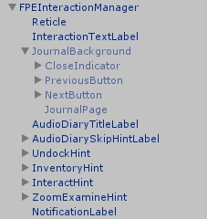
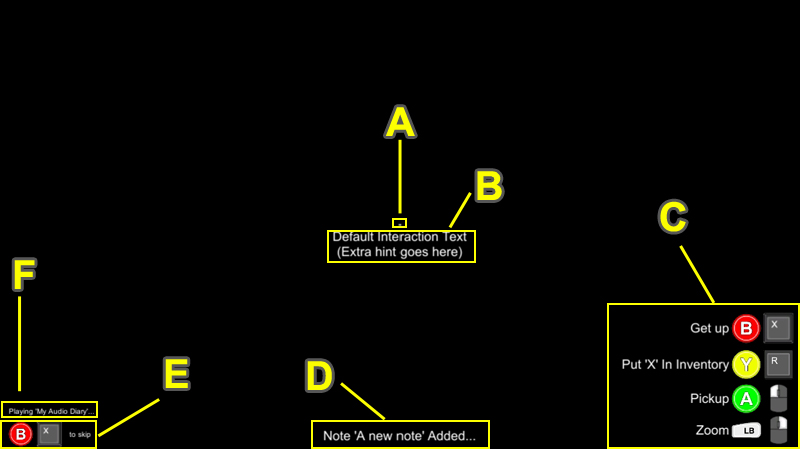
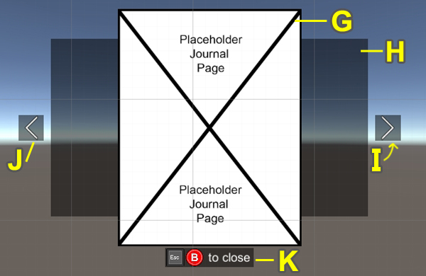

The Interaction Manager handles all core interaction logic and actions. It also has several key UI elements assigned to its prefab (FPEInteractionManager.prefab)
The core UI elements are layed out below in detail along with a visual representation of their on screen context and meaning:
| Reticle (A) | The reticle Image reacts to interaction possibilities. When the reticle is over top of an Interactable object, it changes to indicate the interaction is available. |
| InteractionTextLabel (B) | This Text element content changes based on the Interactable item, and the context of that interaction. |
| Control Hints (e.g. UndockHint, etc.) (C) | These Text and Image hints use the FPEUIHint component to show and hide themselves, as well as change text based on interaction context and available actions. |
| NotificationLabel (D) | This Text element is shown when the player retrieves an Attached Note. |
| AudioDiarySkipHintLabel (E) | This Text and Image element displays the 'skip diary' option to the player. It only appears when a diary is playing, and disappears when the diary is skipped or finishes playing. |
| AudioDiaryTitleLabel (F) | This Text element displays the title of the currently playing Audio Diary, along with some optional pre- and post-text. |
The JournalBackground contains Text and Image elements used in displaying and reading Journal pages. It is only shown when the player interacts with a Journal.
| JournalPage (G) | The Image element that houses each Journal Page as defined in the Inspector. |
| JournalBackground (H) | This Image element simply provides a black background to support the overall UI design. |
| NextButton (I) | This button moves the Journal forward one page (if allowed). |
| PreviousButton (J) | This button moves the Journal back one page (if allowed). |
| CloseIndicator (K) | This Image element displays a button hint showing how the journal can be closed. |